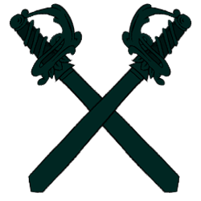

  <ion-toolbar>
    <div class="logo">
      
      <div class="ludo">
      <span >Parchis</span>
      </div>
    </div>
  </ion-toolbar>

<ion-content [fullscreen]="true">
  <div class="pathContainer" *ngFor="let n of numSequence(20);let i=index">
    <div class="path1"  [ngStyle]="{'clip-path':'polygon(50% 42%,'+1000*math.cos((this.currentAngle-i*18-10)/180*math.PI)+'px '+1000*math.sin((this.currentAngle-i*18-10)/180*math.PI)+'px,'+1000*math.cos((this.currentAngle-i*18)/180*math.PI)+'px '+1000*math.sin((this.currentAngle-i*18)/180*math.PI)+'px'}"></div>
   </div>
  <div class="userInfo">
    <div class="avatarImg">
      
    </div>
    <div class="username">
      <div class="inputText">
        <ion-input placeholder={{userName}} value={{userName}} (ionChange)="onChange($event)"></ion-input>
      </div>
    </div>
  </div>
  <div class="buttonPanel">
    <div class="loginBtn" (click)="loginClick()">
      Login
    </div>
    <span> <span class="ytext">Your functions are limited</span></span>
    <div class="removeBtn" (click)="removeClick()">Remove ads</div>
    <span> <span class="ytext1">Version upgrade</span></span>
    <div class="twoline">
      <div class="settingBtn" (click)="setting()">setting</div>
      <div class="shareBtn" >share</div>

    </div>
    <div class="twoline1">
      <div class="rateBtn">
        rate
      </div>
      <div class="otherBtn">
        other games
      </div>
    </div>


  </div>
  <div class="links">
    
    
    

  </div>

  <ion-modal id="example-modal" #modal trigger="open-custom-dialog">
    <ng-template>
      <div class="wrapper" *ngIf="currentClick=='login'">
        
        <div class="enterBtn">Enter</div>
        <div class="registerBtn">Register</div>
      </div>
      <div class="wrapper" *ngIf="currentClick=='setting'">
        <div class="title">Setting</div>
        <div class="musicBtn">Music On</div>
        <div class="soundBtn">Sound On</div>
        <div class="colorBtn">Color Change</div>
      </div>
      <div class="wrapper" *ngIf="currentClick=='avatar'">
        <div class="title1">Choose avatar</div>

          <cdk-virtual-scroll-viewport class="scrollbackground"  itemSize="3" minBufferPx="500" maxBufferPx="500">
              <div class="itemslist" *cdkVirtualFor="let item of numSequence(62);let i=index">
                <span class="items" >
                    <div class="item" (click)="onAvatarTap(i*3)"  [ngStyle]="{'background':'url(../../../assets/img/avatars/avatar_'+i*3+'.png)','background-size':'100% 100%'}"></div>
                    
                </span>
                <span class="items" >
                  <div class="item" (click)="onAvatarTap(i*3+1)"  [ngStyle]="{'background':'url(../../../assets/img/avatars/avatar_'+(i*3+1)+'.png)','background-size':'100% 100%'}"></div>
                  
              </span>
              <span class="items" >
                <div class="item" (click)="onAvatarTap(i*3+2)"  [ngStyle]="{'background':'url(../../../assets/img/avatars/avatar_'+(i*3+2)+'.png)','background-size':'100% 100%'}"></div>
                
            </span>
              </div>
          </cdk-virtual-scroll-viewport>
          <div class="soundBtn" (click)="onAcceptBtnClick()">Accept</div>

      </div>
    </ng-template>
  </ion-modal>

</ion-content>

<ion-footer class="ion-no-border">
    <div class="tabcontainer">
      <div class="tab1">
        
      </div>
      <div class="tab2">
        
      </div>
      <div class="tab3">
        
      </div>
    </div>
</ion-footer>
